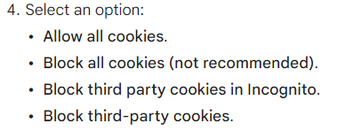
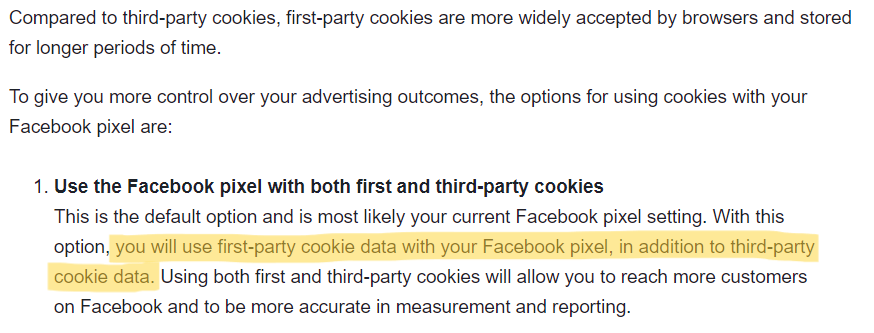
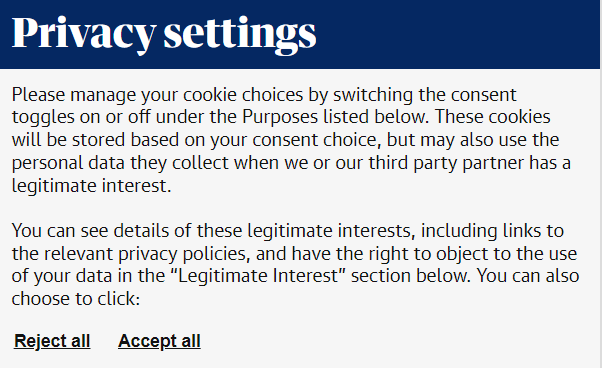

Protecting Your Perosonal Information
There are many possible paths of action to make sure that you're only tracked when you want to be.
First, there's the nuclear option. Disable ALL cookies.
Remember that cookies are just text stored in your browser, and that websites read those cookies to make decisions. If the text is gone, then the cookies are gone. No more tracking, no more targeting ads, but also no more functionality for many sites.
Cookie are used for many things, and only one of those purposes is tracking. Some websites even require you to accept cookies to keep you logged in when you go from one page to the next.
But if you decide that convenient browsing is not worth the risk of compromising privacy, and want all cookies gone, most browsers offer a "block all cookies" option in their privacy settings.
Click here to learn how to do so on Chrome.
But wait! What about a compromise?
Note the three options of restricting cookies.
There's an option to only block third-party cookies. That seems more reasonable; you get to keep functionality cookies while still blocking third-party trackers like GoogleAdServices. Neat, right?
Wrong.
Third-party cookies only mean cookies that are sent to your browser from another site. Clicking "Block third-party cookies" might not actually block all third-party cookies.
According to Recode by Vox, big data companies such as Facebook (okay, Meta) have created cookies such as the Meta Pixel solution that use a first-party cookie to track your activity on that site, then share that information with the advertiser's Pixel, which is basically a database of users that have seen their ads. But don't take it from them, take it from Meta:
Taken right from https://www.facebook.com/business/help/471978536642445
Well, at least they aren't ashamed to say it.
Now, the good news. Remember the GDPR?
While it nominally only applies to EU companies operating in EU countries, Article 3 (Territorial Scope) of the regulation stipulates that:
This Regulation applies to the processing of personal data of data subjects who are in the Union by a controller or processor not established in the Union, where the processing activities are related to: the offering of goods or services, irrespective of whether a payment of the data subject is required, to such data subjects in the Union
As long as the site handles personal data that originated from the EU and markets to EU citizens, it has to pay attention to the GDPR.
This means most big international conglomerates need to at least pay lip service to the GDPR with opt-outs and cookie banners, but there are some specific provisions (i.e. right to refuse) that may not apply to non-EU citizens.
Therefore, the long-term solution is to get governments worldwide to adopt GDPR-esque privacy laws.
Ask local politicians about data regulation legislation. Contact your local MP. Look for activist groups in your local area. The hardest part of grassroots politics is getting started. At the end of the day, if you live somewhere that has elections that count for something, you can make a difference.
But you know how it is with modern politicians. They take a long time to do anything right. So what can you do to improve your privacy situation right now?
For now, you can take advantage of the parts of the GDPR that do apply to you.
Image: The Guardian
For example, instead of just cliking "accept all" when you see a cookie banner, you should at least click manage and/or "decline all". It's one more click, sure, but it could mean that advertisers are denied access to your browsing activity on that site. While tracking cookies can legally pretend to be first-party cookies from the browser's perspective, they can't legally pretend not to be tracking cookies from the user's perspective. So until the US, Canada, and other jurisdictions get to implementing common sense cookie laws, milk the GDPR for all its worth. After all, big data has been milking us for every bit of information we have, so denying them new bits one by one will be the small victories upon which life is built.
You can also go to YourAdChoices, a site affiliated with the Digital Advertising Alliance, to opt out of personalized ads en masse, if doing so gives you more peace of mind.